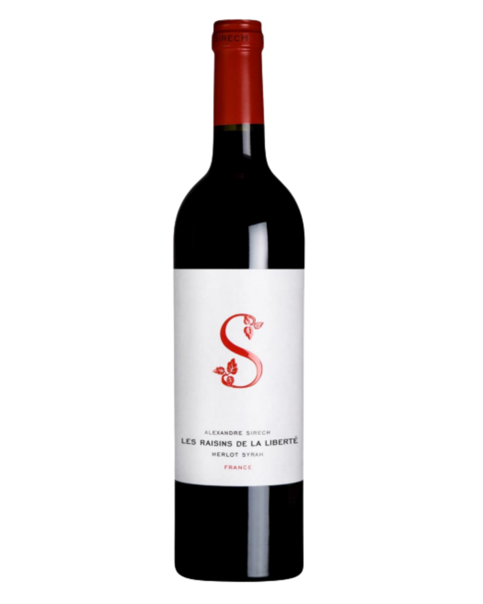

2 Editions

Les Raisins de la Liberté
Merlot 50% · Syrah 50% · Vin de France · 13% alc./vol.
Bordeaux is the home of Merlot. We have chosen to use Syrah from the Corbières region to play the structural role, providing structure but also adding sunny exoticism with fine notes of cocoa, mocha, and spice.
Round, smooth, and balanced. Aromas of red fruits accentuated by hints of spice, cocoa, and mocha. A complex bouquet from blending different varietals and regions.
2021 Vintage — "A return to freshness" with excellent balance and acidity.

Le Blanc
Sauvignon Gris 47% · Vermentino 39% · Muscadelle 14% · Vin de France · 13% alc./vol.
This unique blend is made from vines grown in three terroirs in Southwest France: 40-year-old Sauvignon Gris from clay-limestone soils near Saint-Emilion; Vermentino from Minervois with sun-filled silicon/gravel soils; Muscadelle from Gaillac on a limestone terroir.
Lovely pale-yellow with golden highlights. Intense nose: grapefruit, white fruit (lychee and pear), floral nuances. Generous and full-bodied palate, balanced freshness and roundness with a wonderfully long aftertaste.